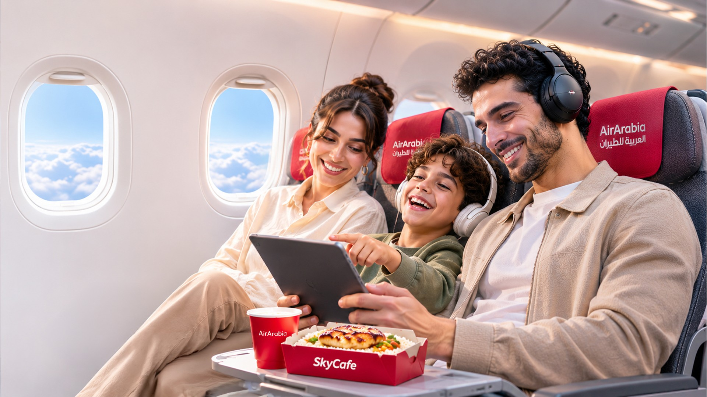
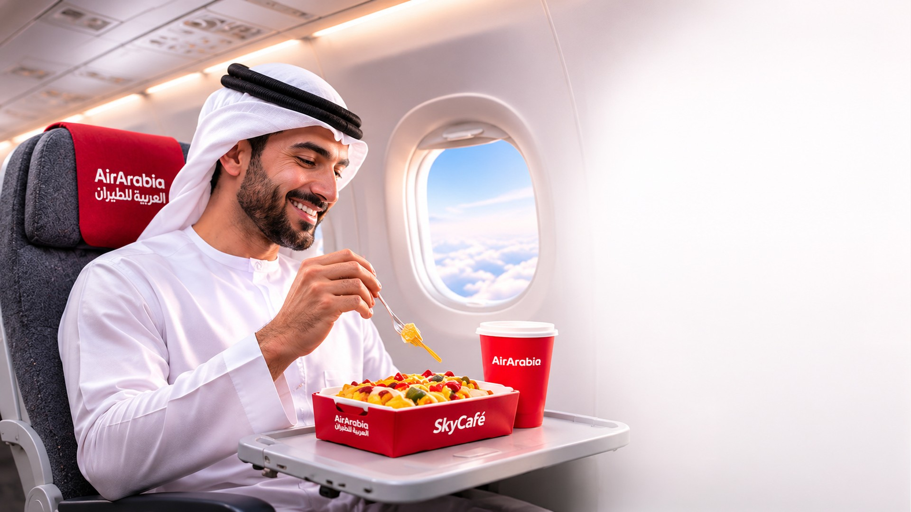
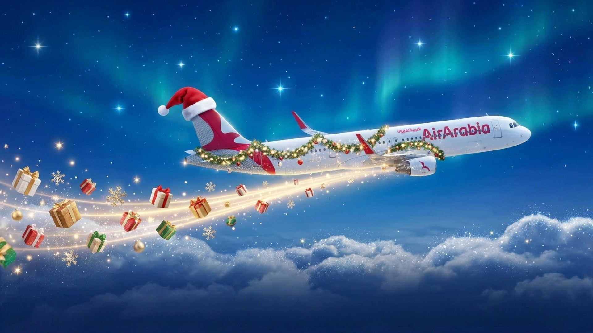

ASSESSMENT 01 · BRING THE AIR ARABIA EXPERIENCE TO LIFE
Time flies.
A 360° campaign for SkyTime, SkyCafé and LegRoom.
Key VisualSocialFilmsOutdoorRadioInternalTrade
View campaign →

ASSESSMENT 02 · CHRISTMAS WITH AIR ARABIA
Christmas Takes Flight.
A Christmas campaign for seven European markets.
Key VisualOutdoorSocialDigital7 markets
View campaign →
Thinking first
Each campaign shows the insight, the routes explored and the reason behind every choice, as the brief asks.
Built on the brand
Air Arabia typeface, colours and layout principles from the brand guidelines, applied across every format.
Imagery
Created with AI image-generation tools, then enhanced and edited in Adobe applications. No stock imagery was used.